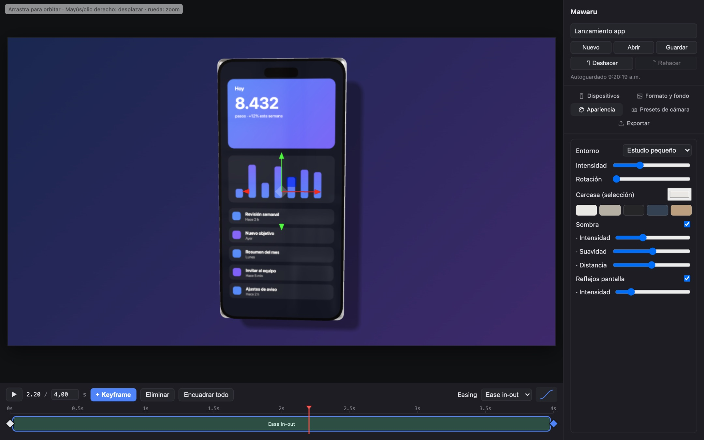
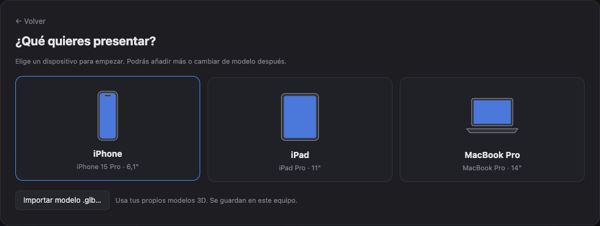
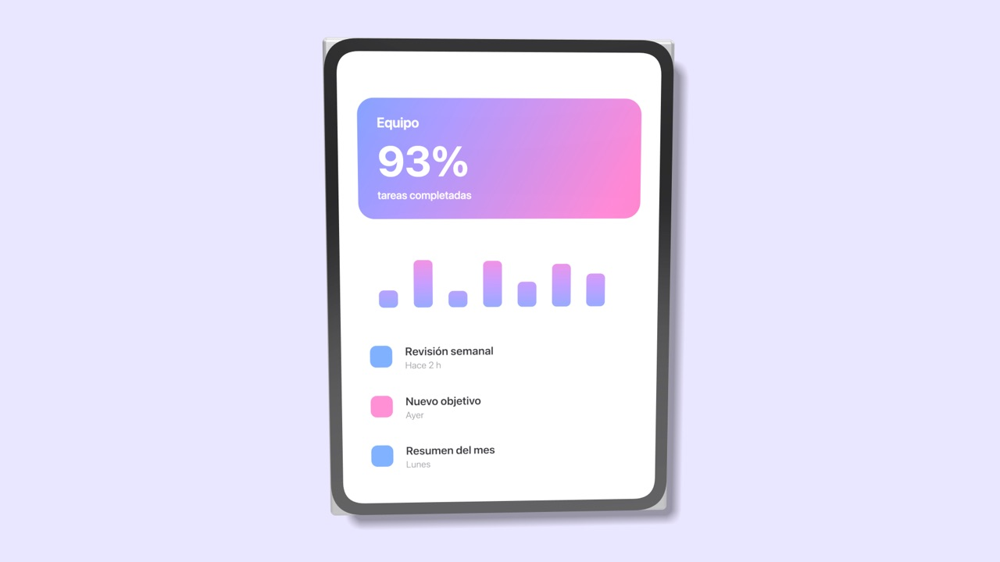
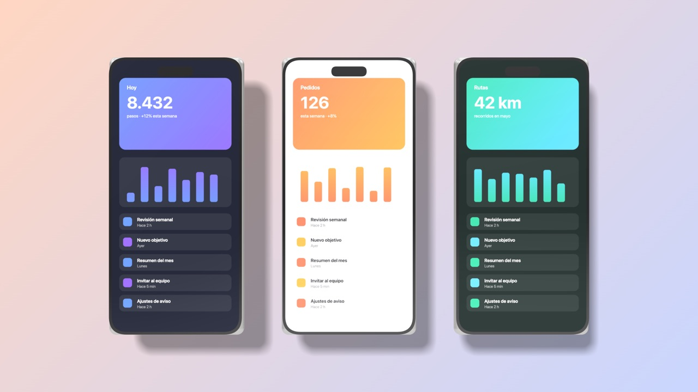
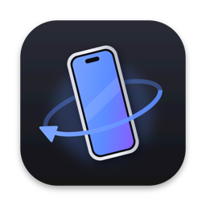

Timeline con keyframes
Guarda posiciones de cámara y dispositivo, ajusta la curva de cada tramo y reproduce la animación al instante.
回る · mawaru: «girar» en japonés
Pon tus pantallas en teléfonos, tablets y portátiles, mueve la cámara con keyframes y exporta un vídeo listo para tu web, tu portafolio o tus redes.

Guarda posiciones de cámara y dispositivo, ajusta la curva de cada tramo y reproduce la animación al instante.
Combina teléfono, tablet y portátil en la misma escena. Cada uno con su pantalla, su color de carcasa y su animación.
Trae cualquier dispositivo en .glb. Mawaru detecta la pantalla, el material de la carcasa y el tamaño real.
Exporta MP4 hasta 4K a 60 fps, un PNG del fotograma o una secuencia PNG con transparencia. Los vídeos de pantalla conservan su audio.
Suelta una carpeta de diseños y Mawaru los reparte en escenas 16:9 con uno, dos o tres dispositivos cada una.
Entornos HDRI de estudio y exteriores, fondos de color, gradiente o imagen, y sombras suaves que siguen la silueta.
Todo se procesa en tu equipo y funciona sin conexión. Sin cuentas, sin subir tus diseños a ningún servidor.
16:9 para YouTube, 9:16 para Reels y TikTok, 1:1 y 4:5 para Instagram. Cambia de formato sin rehacer la animación.

Empieza con un teléfono, una tablet o un portátil, o con un modelo tuyo.

Arrastra una imagen o un vídeo sobre la pantalla. Si es más alto que la pantalla, puedes hacer scroll.

Usa un preset de cámara o crea tus keyframes y exporta el vídeo en el formato que necesites.

Un solo instalador para Mac con Apple Silicon e Intel.
Descargar para Mac (.dmg).dmg descargado.Si macOS indica que no puede comprobar el desarrollador, haz clic derecho sobre Mawaru en Aplicaciones, elige Abrir y confirma. Solo hace falta la primera vez.
Un teléfono, una tablet y un portátil con tapa abatible, modelados para Mawaru. Además puedes importar cualquier dispositivo en formato .glb, por ejemplo uno exportado desde Blender.
Sí: la versión web es el mismo editor y funciona en Chrome o Edge. Tus diseños tampoco salen de tu equipo. La app de Mac añade el menú nativo y el trabajo sin conexión.
No. Los entornos de luz vienen incluidos y la exportación se hace en tu Mac.
Imágenes PNG o JPG y vídeos. Las capturas largas se pueden recorrer con scroll, y el audio de los vídeos se incluye en el MP4.
Sí. Los proyectos se guardan como archivos .mawaru.json y la app guarda automáticamente el último en el que trabajaste.
La app de escritorio es solo para Mac. En cualquier sistema puedes usar la versión web en Chrome o Edge: la exportación de vídeo necesita un navegador basado en Chromium.